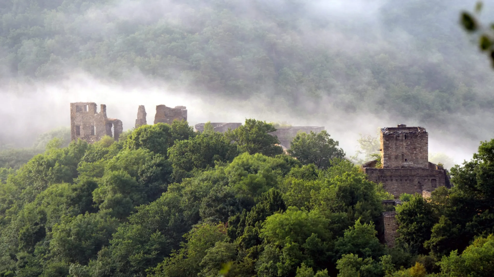
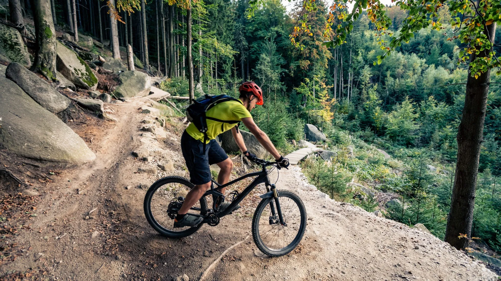

Die kostenlose Alternative zu Stoneman - Mountainbike-Abenteuer im mystischen Hunsrück
Genuss ODER Grenzerfahrung? Entkomme dem Alltag, tauche ein in die ungezähmte Natur des Hunsrücks auf zwei epischen MTB Mehrtagestouren.
Der Slateman Hunsrück bietet zwei mehrtägige Mountainbike-Abenteuer durch die ungezähmte Natur des Hunsrücks. Perfekt für Bikepacking-Enthusiasten und MTB-Abenteurer. Mit jedem Tritt in die Pedale atmest du Freiheit ein – die weiten Horizonte, die mystischen Wälder und die Stille, die nur von deinem Atem und den Reifen auf dem Trail durchbrochen wird. Komplett kostenlos und non-profit.
Genuss oder Grenzerfahrung – Der Slateman Hunsrück bietet zwei einzigartige Bikepacking- und Mountainbike-Mehrtagestouren, die sowohl deinen Geist als auch deinen Körper herausfordern. Beide Routen sind schwere MTB-Touren, die eine sehr gute Kondition und fortgeschrittene Fahrtechnik erfordern. Einige Passagen können so anspruchsvoll sein, dass du dein Rad schieben musst. Sie sind ideal für erfahrene Mountainbiker, Gravelbiker und Bikepacking-Abenteurer, die Natur und mehrtägige Herausforderungen lieben.

Diese Route führt durch den Naturpark Soonwald und verbindet die charmanten Orte Kirn, Stromberg, Simmern, Kastellaun, Kirchberg und Rhaunen. In Rhaunen besteht eine Verbindung zur Route Slateman Hunsrück-Hochwald.
Diese Tour kombiniert Naturerlebnis, fahrtechnische Herausforderungen und kulturelle Highlights zu einem unvergesslichen Abenteuer.

Die Route Hunsrück-Hochwald führt durch hohe Tannenwälder, hinauf zum Erbeskopf, dem höchsten Berg im Hunsrück. Sie verbindet die Orte Morbach, Hermeskeil, Losheim, Birkenfeld und Rhaunen. In Rhaunen kannst du zur Route Slateman Hunsrück-Soonwald wechseln.
Diese Route vereint atemberaubende Naturschönheit mit fahrerischen Herausforderungen und bietet ein intensives Erlebnis für erfahrene Biker.
Noch ist alles offen – sei du derjenige, der Geschichte schreibt und die ersten Einträge in den Kategorien Gold, Silber und Bronze füllt.
Eine Route an einem Tag
Eine Route an zwei Tagen
Eine Route an drei Tagen
Ob du die Tour genießen oder deine Grenzen ausloten möchtest – dies ist deine Gelegenheit, als Pionier in den Slateman Hunsrück Abenteuern zu brillieren. Zeige, was in dir steckt, und erlebe die einmalige Kombination aus Natur, Herausforderung und Erfolg.
Finisher werdenHast du eine Route erfolgreich absolviert? Melde dich per WhatsApp, um in die Finisher-Liste aufgenommen zu werden.